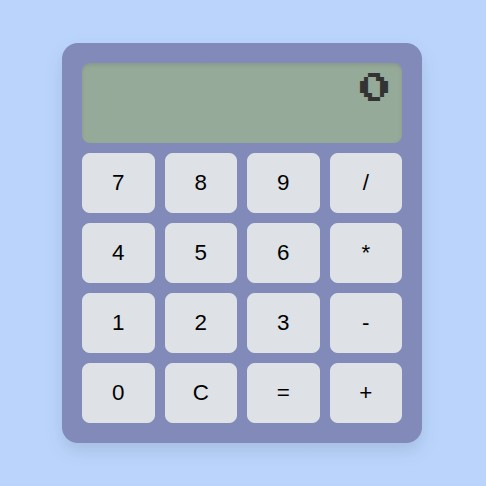

Meine Projekte

Taschenrechner mit JS
Ein mit HTML, CSS und Java Script programmierter Taschenrechner, mit Basisfunktionen
Java Script • HTML • CSS
Speech to Text Skript
Ein Bash Skript wandelt via whisper.cpp Sprache in Text um. Ausgabe wird in einer Textdatei gespeichert, wenn gewollt
Bash • whisper.cpp • ffmpeg